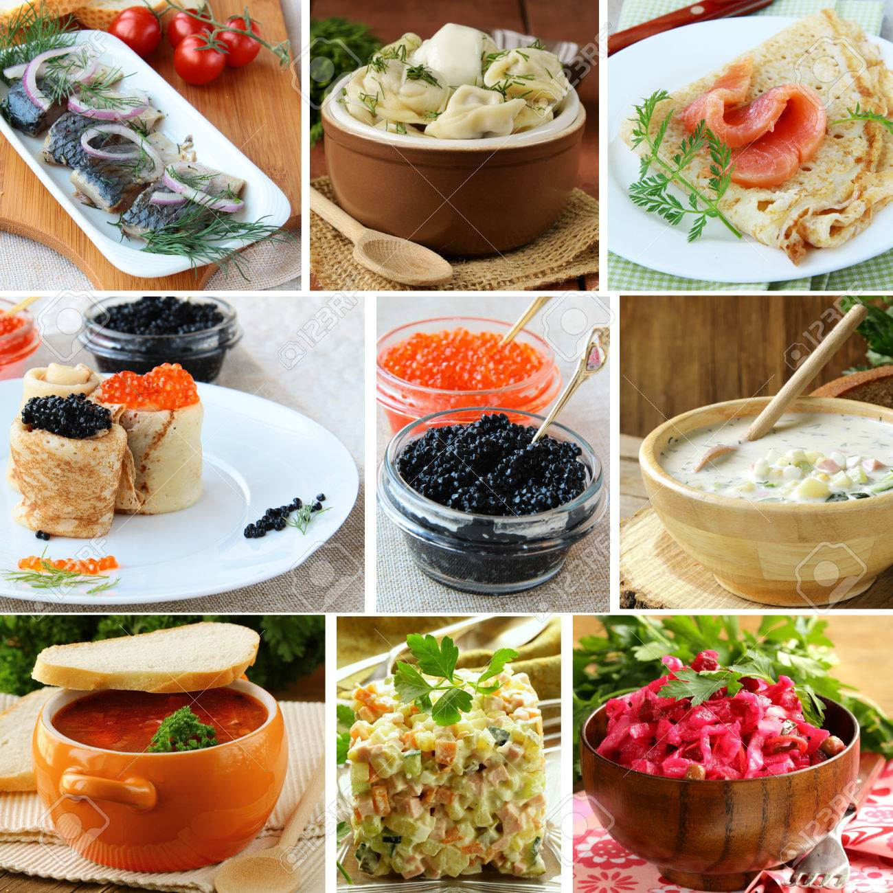
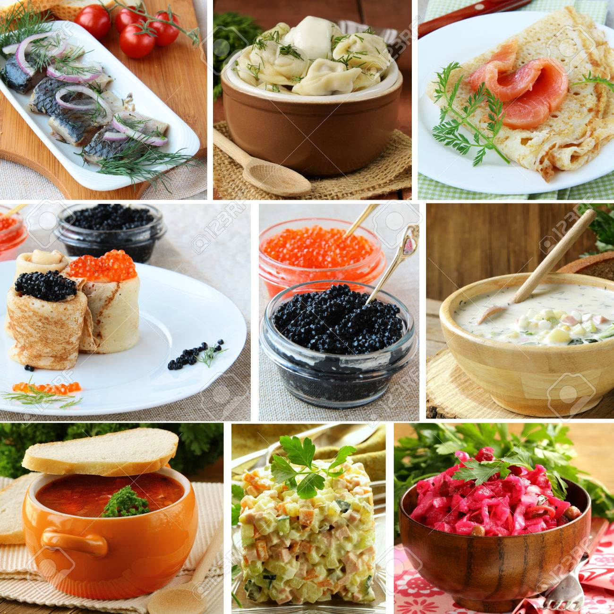

Visit us at: www.foodies.com
Box 564, Disneyland
ISRAEL
|
||
|
|
||
|---|---|---|
| רוסיה מורכבת מהרבה תרבויות שונות, ולכן המטבח הרוסי מאוד רחב. המאכלים העיקריים שם הם- מאכלי דגים, מאכלי בשר, קוויאר, פטריות, דבש, דייסות, לביבות, ועוד. כל המזון הזה נצרך גם ברוסיה ביומיום. המטבח הרוסי המודרני משלב באופן יצירתי מנות מעודנות עם מנות רוסיות מסורתיות.
 |
||
|
Written by Jon Doe. Visit us at: www.foodies.com Box 564, Disneyland ISRAEL | ||